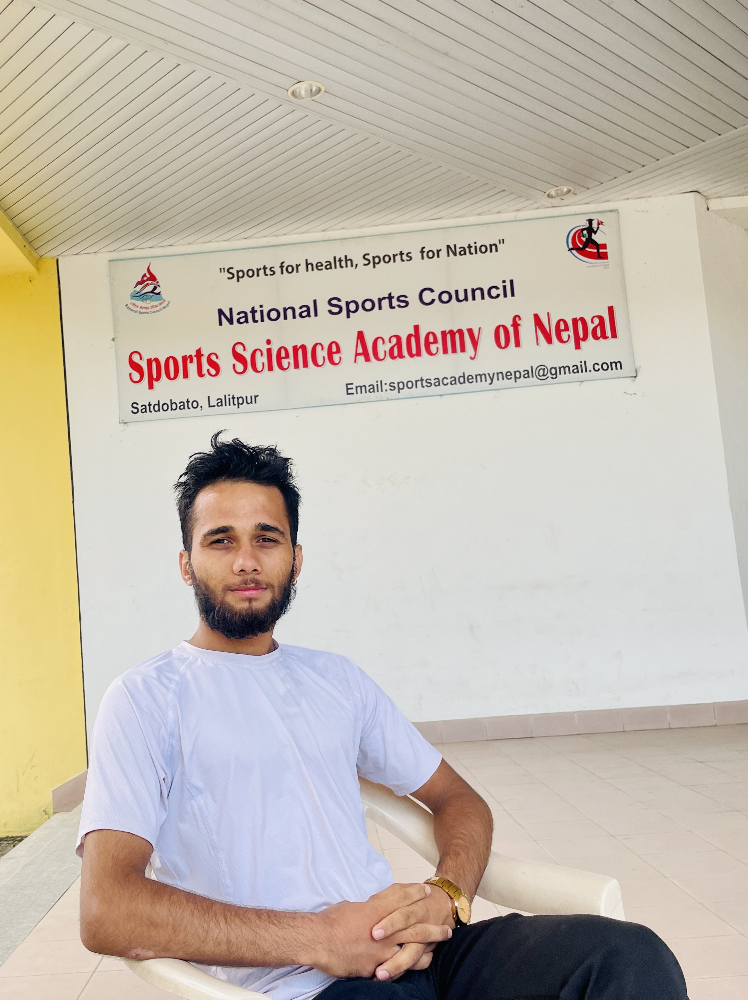

Manish Timalsina

Summary
I am Manish Timalsina, a final-year Bachelor's student in BICT at Virinchi
College. I have a strong interest in programming, with a particular focus
on Python. I recently completed a 3-month course in Aptech, which allowed
me to gain practical experience in coding and project development.
Education
- Bachelors in BICT - Virinchi College, AEU University
Work Experience
- Enumerator - Lalitpur Municipality
Feb 2022 - July 2022
-
Involved meticulous data collection and analysis, emphasizing accuracy
and attention to detail.
-
Ecient time management and adaptability in meeting deadlines and
adjusting to changing requirements
-
Transitioning into the IT industry, I aim to apply these skills to
excel as a Python developer, focusing on coding, problem-solving, and
data analysis in a dynamic technical environment.
- Tax Awareness Team
june 2023 - July 2023
-
Involved in Data collection and analysis of various business inside
lalitpur metropolitian city
-
Prepared report about the collected data from various households and
businesses
Skills
- Html , Css : ★ ★★★★
- Python with Django : ★★★★☆
- Javascript : ★★★★☆
- Leadership: ★★★★☆
- Communication:★★★★☆
Awards and Certificate
-
Media Training
Aajako Aawaj Media / 2014
-
Microsoft office package training
Genese Cloud /2020
-
Microsoft Innovation Educator
Genese Cloud /2020
-
The Fundamental of Digital Marketing
Google Digital Garafew /2021
-
Time Management Skill
Lingaya's LLDIMS / 2021 (online)
-
Decision Making and Problem Sloving
FEMA /2021
-
Advancing the Digital Economy for Sustainable growth in Asia
ADBI Institute / 2021 (online)
-
Leadership and Infuence
FEMA /2021
-
Programming
Aptech/2022
-
Poor Household Identication and Identity Card Distrubution Program
Lalitpur Municipality /2022
-
Teach To Learn
Virinchi College /2023
Others
©Manish Timalsina. All rights reserved.